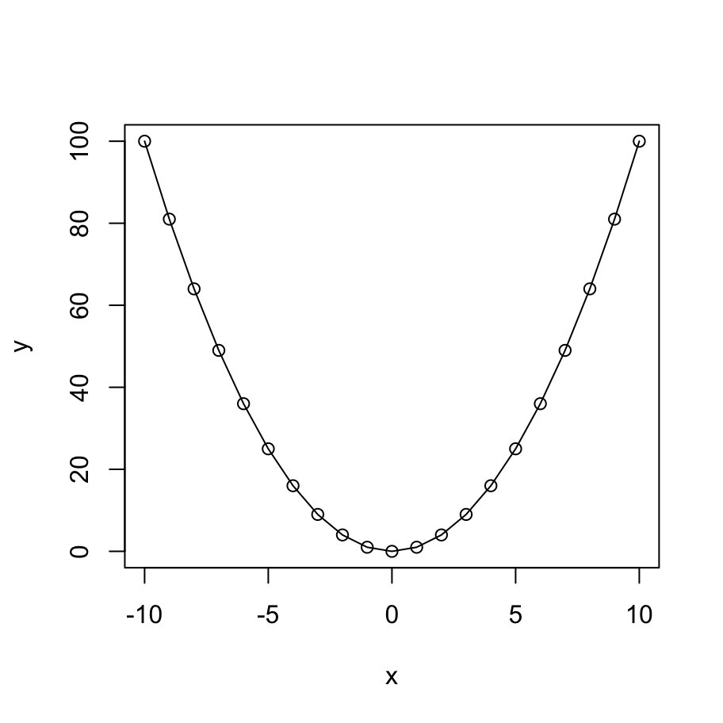

Getting Started
Learning Objectives
- Get familiar with using R in RStudio
- Be able to use R to create and store values as objects.
- Know some of the ways R handles certain things, like spaces.
- Know how to create comments with the
#symbol.- Know some best practices for staying organized in R with R projects.
R and RStudio
R is a programming language that runs computations, and RStudio is an interface for working with R with a lot of convenient tools and features. It is the primary integrated development environment (IDE) for R users.
You can think of the two like this:
- R is like a car’s engine.
- RStudio is like a car’s dashboard.
| R: Engine | RStudio: Dashboard |
|---|---|
 |
 |
Your car needs an engine (R) to run, but having a speedometer and rear view mirrors (RStudio) makes driving a lot easier.
To get started using R , you need to download and install both R and RStudio (Desktop version) on your computer. Go to the course prep page for instructions.
Once you have everything installed, open RStudio. You should see the following:

Notice the default panes:
- Console (entire left)
- Environment/History (tabbed in upper right)
- Files/Plots/Packages/Help (tabbed in lower right)
FYI: you can change the default location of the panes, among many other things: Customizing RStudio.
Go into the Console on the left with the > (that’s the command prompt).
Let’s get started using R!
Your first conveRsation
When you type something into the console, R will give you a reply. Think of it like having a conversation with R. For example, let’s ask R to add two numbers:
3 + 4## [1] 7As you probably expected, R returned 7. No surprises here!
Quick note: you can ignore the
[1]you see in the returned value…that’s just R saying there’s only one value to return.
But what happens if you ask R to add a number surrounded by quotations marks?
3 + "4"## Error in 3 + "4": non-numeric argument to binary operatorLooks like R didn’t like that. That’s because you asked R to add a number to something that is not a number ("4" is a character, which is different from the number 4), so R returned an error message. This is R’s what of telling you that you asked it to do something that it can’t do.
Here’s a helpful tip:
EMBRACE THE ERROR MESSAGES!
By the end of this course, you will have seen loads of error messages. This doesn’t mean you “can’t code” or that you’re “bad at coding” - it just means you’ve still got more work to do to solve the problem.
In fact, the best coders sometimes intentionally write code with known errors in it in order to get an error message. This is because when R gives you an error message, most of the time there is a hint in it that can help you solve the problem that led to the error. For example, take a look at the error message from the last example:
Error in 3 + "4" : non-numeric argument to binary operatorHere R is saying that there was a “non-numeric argument” somewhere. That suggests that the problem might be with something not being a number. As we just discussed, "4" is a character, or a “non-numeric argument”.
With practice, you’ll get better at embracing and interpreting R’s error messages.
Storing values
You can store values by “assigning” them to an object with the <- symbol, like this:
x <- 2Here the symbol <- is meant to look like an arrow. It means “assign the value 2 to the object named x”.
TIP: To quickly type
<-, use the shortcutoption+-(mac) oralt+-(windows). There are lots of other helpful shortcuts. TypeAlt+Shift+Kto bring up a shortcut reference card).
Since we assigned the value 2 to x, if we type x into the console and press “enter” R will return the stored value:
x## [1] 2If you overwrite an object with a different value, R will “forget” the previous assigned value and only keep the new assignment:
x <- 42
x## [1] 42TIP: Always surround
<-with spaces to avoid confusion! For example, if you typedx<-2(no spaces), it’s not clear if you meantx <- 2orx < -2. The first one assigns2tox, but the second one compares whetherxis less than-2.
Use meaningful variable names
 Art by Allison Horst
Art by Allison Horst
You can choose almost any name you like for an object, so long as the name does not begin with a number or a special character like +, -, *, /, ^, !, @, or &. You will be wise to adopt a convention for demarcating words in names. I recommend using one of these:
snake_case_uses_underscorescamelCaseUsesCaps
Make another assignment:
this_is_a_long_name <- 2.5To inspect this, try out RStudio’s completion facility: type the first few characters, press TAB - voila! RStudio auto-completes the long name for you :)
R is case sensitive
To understand what this means, try this:
cases_matter <- 2
Cases_matter <- 3Let’s try to inspect:
cases_matter## [1] 2Cases_matter## [1] 3Although the two objects look_ similar, one has a capital “C”, and R stores that as a different object.
In general, type carefully. Typos matter. Case matters. Get better at typing.
The workspace
Look at your workspace in the upper-right pane. The workspace is where user-defined objects accumulate. You can also get a listing of these objects with commands:
objects()## [1] "cases_matter" "Cases_matter" "this_is_a_long_name"
## [4] "x"ls()## [1] "cases_matter" "Cases_matter" "this_is_a_long_name"
## [4] "x"If you want to remove the object named x, you can do this
rm(x)To remove everything, use this:
rm(list = ls())or click the broom symbol.
What else can R do?
R can do a LOT more than what we’ve seen thus far. For example, you can ask R to print text to the console using the cat() function:
cat("Hello world!")## Hello world!In the next section, we’ll learn more about some of the distinctions between different types of values in R (like numbers and characters).
While R is a programming language, it is perhaps most commonly known as a tool for analyzing data and creating plots. For example, here’s how you can use R to make a simple plot of the equation \(y = x^2\):
x <- seq(from = -10, to = 10)
y <- x^2
plot(x, y)
lines(x, y)
But you can plot way more than equations in R! For example, take a look at this plot of some actual data about penguins (don’t worry about the code for now - by the end of this course you’ll know what it all does!):
library(ggplot2)
library(palmerpenguins)
ggplot(data = penguins, aes(x = flipper_length_mm, y = body_mass_g)) +
geom_point(aes(color = species, shape = species),
size = 3, alpha = 0.8) +
scale_color_manual(values = c("darkorange","purple","cyan4")) +
theme_minimal() +
labs(title = "Penguin size, Palmer Station LTER",
subtitle = "Flipper length and body mass for Adelie, Chinstrap, and Gentoo Penguins",
x = "Flipper length (mm)",
y = "Body mass (g)",
color = "Penguin species",
shape = "Penguin species") +
theme(legend.position = c(0.2, 0.7),
legend.background = element_rect(fill = "white", color = NA),
plot.title.position = "plot",
plot.caption = element_text(hjust = 0, face= "italic"),
plot.caption.position = "plot")
A couple more important points
R ignores excess spacing
When I typed 3 + 4 before, I could equally have done this
3 + 4## [1] 7or this
3 + 4## [1] 7Both produce the same result. The point here is that R ignores extra spaces. This may seem irrelevant for now, but in some programming languages (e.g. Python) blank spaces matter a lot!
This doesn’t mean extra spaces never matter. For example, if you wanted to input the value 3.14 but you put a space after the 3, you’ll get an error:
3 .14## Error: <text>:1:5: unexpected numeric constant
## 1: 3 .14
## ^Basically, you can put spaces between different values, and you can put as many as you want and R won’t care. But if you break a value up with a space, R will send an error message.
Using comments
In R, the # symbol is a special symbol that denotes a comment. R will ignore anything on the same line that follows the # symbol. This enables us to write comments around our code to explain what we’re doing:
2 + 2 # I'm adding two numbers## [1] 4Notice that R ignores the whole sentence after the # symbol.
Staying organized
The history pane
R keeps track of your “command history.” If you click on the console and hit the “up” key, the R console will show you the most recent command that you’ve typed. Hit it again, and it will show you the command before that, and so on.
The second way to get access to your command history is to look at the history panel in Rstudio. On the upper right hand side of the Rstudio window you’ll see a tab labeled “History.” Click on that and you’ll see a list of all your recent commands displayed in that panel. It should look something like this:

If you double click on one of the commands, it will be copied to the R console.
Working directory
Any process running on your computer has a notion of its “working directory”. In R, this is where R will look for files you ask it to load. It’s also where any files you write to disk will go.
You can explicitly check your working directory with:
getwd()It is also displayed at the top of the RStudio console.
As a beginning R user, it’s OK let your home directory or any other weird directory on your computer be R’s working directory. Very soon, I urge you to evolve to the next level, where you organize your analytical projects into directories and, when working on project A, set R’s working directory to the associated directory.
Although I do not recommend it, in case you’re curious, you can set R’s working directory at the command line like so:
setwd("~/myCoolProject")Although I do not recommend it, you can also use RStudio’s Files pane to navigate to a directory and then set it as working directory from the menu:
Session > Set Working Directory > To Files Pane Location.
You’ll see even more options there). Or within the Files pane, choose More and Set As Working Directory.
But there’s a better way. A way that also puts you on the path to managing your R work like an expert.
RStudio projects
Keeping all the files associated with a project organized together – input data, R scripts, analytical results, figures – is such a wise and common practice that RStudio has built-in support for this via its projects.
Let’s make one for practice. Do this:
File > New Project ….
You should see the following pane:

Choose “New Directory”. The directory name you choose here will be the project name. Call it whatever you want. RStudio will create a folder with that name to put all your project files.
As a demo, I created a project on my Desktop called “demo”. RStudio created a new project called “demo”, and in this folder there is a file called “demo.Rproj”. If I double-click on this file, RStudio will open up, and my working directory will be automatically set to this folder! You can double check this by typing:
getwd()Save your code in .R Files
It is traditional to save R scripts with a .R or .r suffix. Any code you wish to re-run again later should be saved in this way and stored within your project folder. For example, if you wanted to re-run all of the code in this tutorial, open a new .R file and save it to your R project folder. Do this:
File > New File > R Script
You can copy some of the code we’ve typed so far into this file to re-run it again later:
3 + 4
3 + "4"
x <- 2
x
x <- 42
x
this_is_a_long_name <- 2.5
cases_matter <- 2
Cases_matter <- 3
cases_matter
Cases_matter
objects()
ls()
rm(x)
rm(list = ls())
cat("Hello world!")
x <- seq(from = -10, to = 10)
y <- x^2
plot(x, y)
lines(x, y)
3 + 4
3 + 4
2 + 2 # I'm adding two numbers
getwd()Then save this new R script with some name. Do this:
File > Save
I called the file “tutorial.R” and saved it in my R project folder called “demo”.
Now when I open the “demo.Rproj” file, I see in my files pane the “tutorial.R” code script. I can click on that file and continue editing it!
I can also run any line in the script by typing “Command + Enter” (Mac) or “Control + Enter” (Windows).
Page sources:
Some content on this page has been modified from other courses, including:
- Palmer penguins plot from the palmerpenguins package by Allison Horst.
- “Case” art by Allison Horst
- Danielle Navarro’s book “Learning Statistics With R”
- Jenny Bryan’s STAT 545 Course
- Modern Dive, by Chester Ismay & Albert Y. Kim
George Washington University | School of Engineering & Applied Science
Dr. John Paul Helveston | jph@gwu.edu | Mondays | 6:10–8:40 PM | Phillips Hall 108 | |
This work is licensed under a Creative Commons Attribution 4.0 International License.
See the licensing page for more details about copyright information.
Content 2020 John Paul Helveston